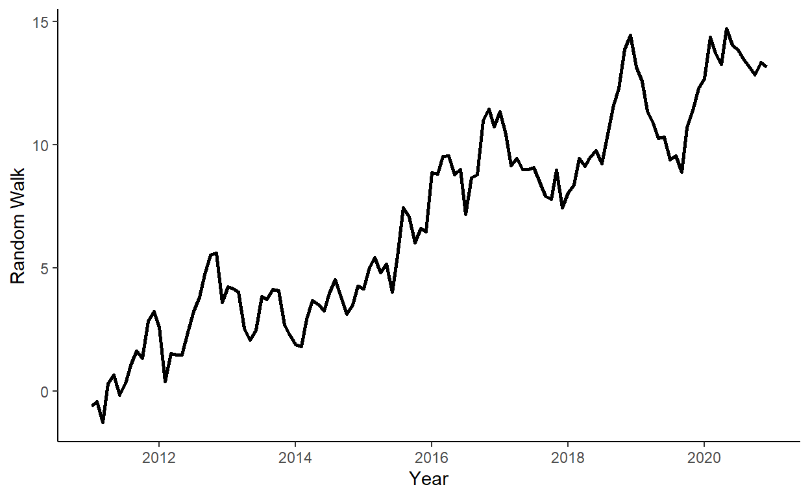

Tutorial 3: Forecasting Methods and Routines
In this tutorial, we will introduce ‘for loop’, and illustrate its use by generating time series as well as by generating one-step-ahead forecasts. We will also perform forecast error diagnostics. To run the code, the data.table and ggplot2 packages need to be installed and loaded.
Let’s generate a random walk process, such that \(y_{t} = y_{t-1}+e_{t}\), where \(e_{t} \sim N(0,1)\), and where \(y_{0}=0\), for \(t=1,\ldots,120\).18
n <- 120
set.seed(1)
r <- rnorm(n)
y <- rep(NA,n)
y[1] <- r[1]
for(i in 2:n){
y[i] <- y[i-1] + r[i]
}Store \(y\) in a data.table along with some arbitrary dates to the data (e.g., suppose we deal with the monthly series beginning from January 2011).
Plot the realized time series using the ggplot function.

Generate a sequence of one-step-ahead forecasts from January 2017 onward by simply averaging the observed time series up to the period when the forecast is made.19
dt$f <- NA
R <- which(dt$date==as.Date("2017-01-01"))-1
P <- n-R
for(i in 1:P){
dt$f[R+i] <- mean(dt$y[1:(R+i-1)])
}Obtain the RMSFE measure the forecast.
## [1] 5.665095Perform the forecast error diagnostics of the forecast.
Zero mean of the forecast errors: \(E(e_{t+1|t})=0\). We test this hypothesis by regressing the forecast error on the constant, and checking whether the coefficient is statistically significantly different from zero.
## Estimate Std. Error t value Pr(>|t|)
## (Intercept) 5.421519 0.2396999 22.61794 6.604031e-27We reject the null, which suggests that we are consistently underestimating (in this case) the one-step-ahead forecasts.
No correlation of the forecast errors with the forecasts: \(Cov(e_{t+1|t},y_{t+1|t})=0\). We perform this test by regressing the forecast error on the forecast, and checking whether the slope coefficient is statistically significantly different from zero.
## Estimate Std. Error t value Pr(>|t|)
## (Intercept) -0.1437252 1.5861275 -0.0906139 0.9281928187
## f 0.9995059 0.2822414 3.5413157 0.0009247749We reject the null, which suggests that there is some information in the data that we do not use well enough.20
No serial correlation in one-step-ahead forecast errors: \(Cov(e_{t+1|t},y_{t|t-1})=0\). We perform this test by regressing the forecast error on its lag, and checking whether the slope coefficient is statistically significantly different from zero.21
## Estimate Std. Error t value Pr(>|t|)
## (Intercept) 0.7057751 0.40681156 1.734894 8.960477e-02
## e1 0.8661231 0.07198491 12.032009 1.164311e-15We reject the null, which again, suggests that the method that we have chosen for forecasting is far from ideal.
The following code is deliberately done inefficiently to illustrate the use of the ‘for loop’. For reference, a much more efficient code, after setting the seed, would have been
y <- cumsum(rnorm(n))↩︎This is equivalent to the expanding window scheme for generating forecasts.↩︎
Because, as we know, the true data generating process is random walk, a better use of information would involve assigning all the weights to the most recent observation rather than spreading them evenly across all observations in the estimation window.↩︎
Note: first we need to generate lagged forecast errors.↩︎